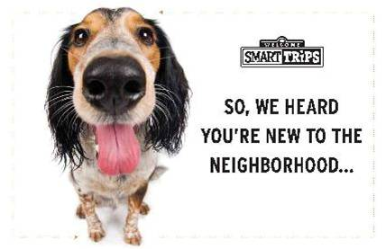
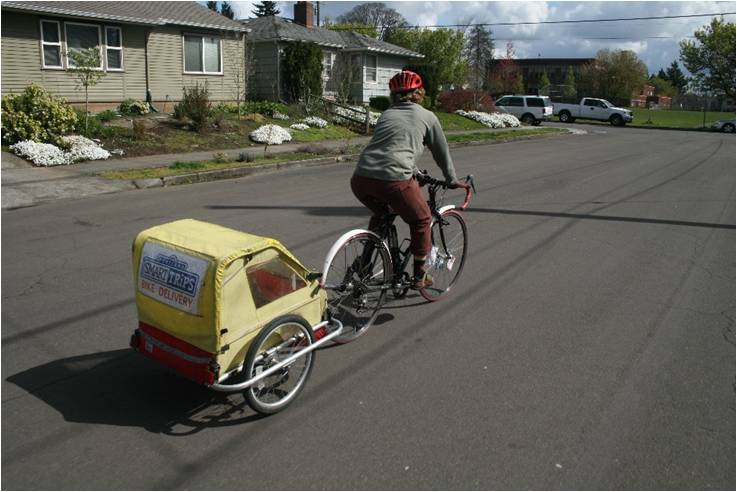
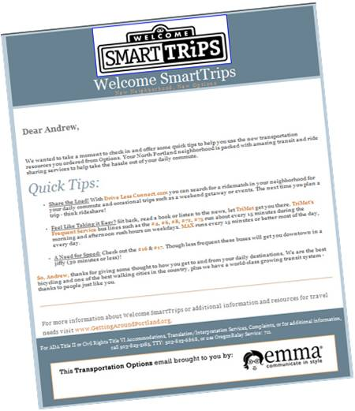
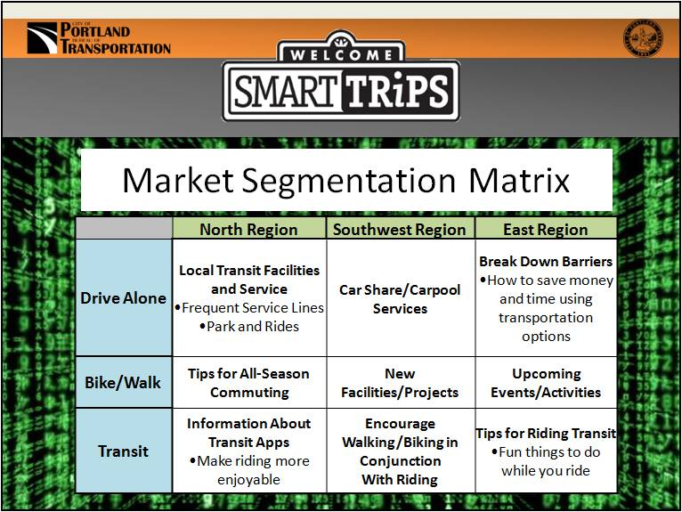
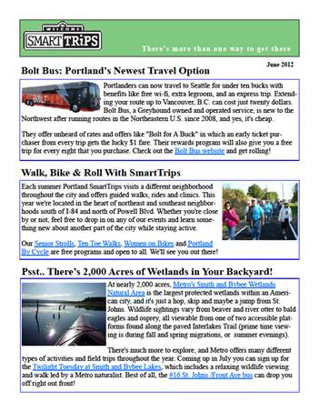
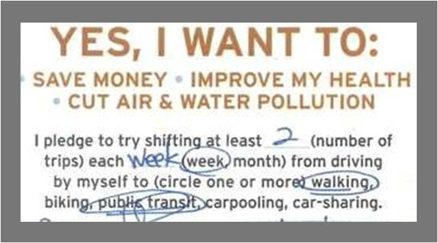
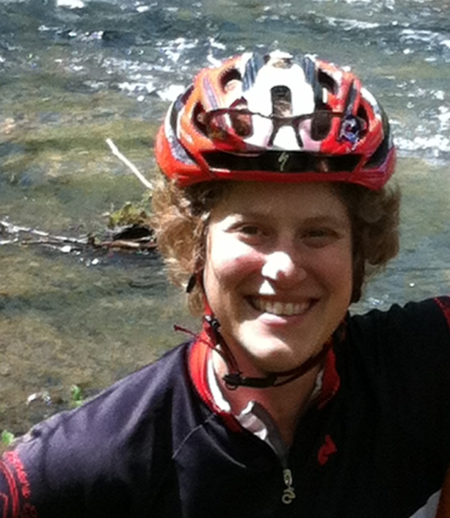
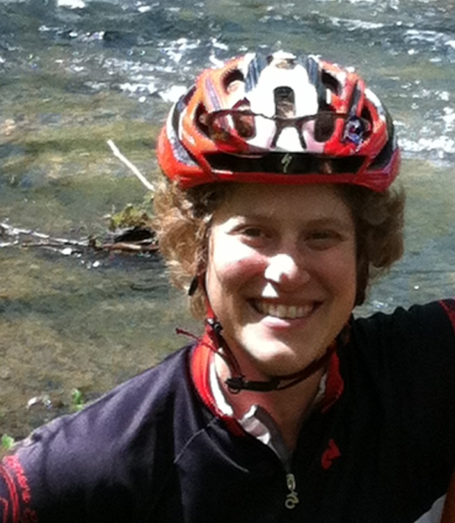

Tools Used
- Building Motivation Over Time
- Feedback
- Financial Incentives and Disincentives
- Obtaining a Commitment
- Overcoming Specific Barriers
- Prompts
- Home Visits
Initiated By
- Portland Bureau of Transportation
Partners
- Metropolitan Planning Organization (Portland region)
- Oregon Department of Transportation
Results
- About 5,400 participants took part in the program, of which 10.5% ordered materials
- Reduction of more than 1 million VMT (vehicle miles travelled), representing approximately 200 miles per new resident per year
- Drive-alone trips decreased 10.4% among new resident populations, not just those involved in the program
- Walking, biking and use of transit rose 13.6% among new residents
Webinar Transcript and Answers to remaining questions
Landmark Case Study
Portland's Smart Trips Welcome Program
With an average of 15% of the U.S. population moving each year, new residents represent a significant portion of urban dwellers. In response, Portland has refocused its Individualized Marketing efforts and incorporated an innovative and targeted communication strategy to help new residents develop environmentally-friendly and active transportation habits. As a result, the city’s new residents took 10% fewer drive-alone trips and the proportion of their trips taken by green and active methods increased by 14%. This comprehensive approach includes a strong evaluation design and targeted social marketing strategies. SmartTrips Welcome was designated a Landmark (best practice) case study in 2012.
Background
Note: To minimize site maintenance costs, all Tools of Change case studies are written in the past tense, even if they are ongoing.
Portland was well known for its progressive planning and transit policies. Its population was 600,000, within a larger region of just over two million people, and was relatively compact, thanks to an urban growth boundary that helped to prevent sprawl. Six percent of all commuting trips were done by bicycle.
The League of American Bicyclists gave Portland a Platinum rating in 2008 and reaffirmed that status in 2013.
"We're known for transportation, it's kind of in the blood," said Linda Ginenthal, SmartTrips Program Manager.
Since 2003, the Portland Bureau of Transportation had operated the SmartTrips program. Its comprehensive approach of individualized marketing activities and education had reached 80% of Portland households, encouraging healthy, active transportation options and reducing millions of vehicle miles traveled (VMT).
“SmartTrips Welcome” took a fresh step on the SmartTrips program to encourage positive transportation behaviour in new residents.
By redefining the approach and developing innovative strategies to target a different audience—new residents—SmartTrips Welcome built upon previous successes to develop an innovative, effective, and replicable transportation behavior change program.
Setting Objectives
SmartTrips Welcome set six objectives:
- Reduce VMT
- Reduce drive-alone trips
- Increase awareness and use of environmentally-friendly and active transportation modes
- Engage eight percent of target new residents to participate
- Demonstrate a shift in primary work and neighborhood mode choice
- Engage each new mover three times, and each participant seven times
"We wanted to increase those biking, walking, and taking transit and we included car sharing and carpooling as well," said Ginenthal.
"We also had a goal to engage 8% of new target residents to participate in the program." SmartTrips had traditionally been geographically based and their engagement numbers were typically higher than in the objectives set for SmartTrips Welcome. "We've had up to 28% and as low as 15% in our geographically-based residential program," explained Ginenthal. "Here, we wanted to set the bar a little bit lower. We knew this is a really hectic time for new movers and we weren't sure we were going to gain their attention."
Getting Informed
Targeting the Audience
From US Census data, program organizers found that 35% of the entire population had moved between 2005 and 2010. Said Ginenthal, “To us, this represented a significant number of people with an immediate gap in knowledge about their local travel options.”
One of the more interesting studies found in reviewing the literature was a 2003 German social science experiment conducted by three researchers (Bamberg, Rolle and Weber) where an individualized marketing intervention was used at a time of what they called a "changed decision" context, meaning immediately after relocation. The research found that if, when in a new situation, people received personally relevant and persuasive information, they were more likely to use it for making new behavioral decisions.
SmartTrips Welcome operated under the assumption that new residents (defined as having moved within six months prior to the program launch date) needed to learn the transportation options specific to their new location, and that this was a good time to introduce, encourage, and support environmentally-friendly, active transportation behavior.
Staff theorized that new circumstances brought about by relocation, necessarily demanded changes to daily routines, and thus new residents would be more receptive to positive travel solutions.
"Brain research has shown that habitual behaviour, doing something repeatedly over and over again, creates neural pathways in our brains for that behavior," explained Andrew Pelsma, SmartTrips program specialist. “Neurons are continually firing in repeated sequences, creating deeper and deeper pathways that become easier and easier for us to process. It's an evolutionary adaptation that allows our brains the ability to focus on other, more immediate or challenging concerns.”
“Think of it like paths in the snow. We tend to follow the same habitual behavior pathways because they're the easiest behaviors for our brains to process.”

"When a person changes residence, everything changes: the way to the store, the way to work, even the steps to the fridge. This time of change offers a unique opportunity to create new neural pathways or reinforce old ones that haven't been used for a while and make these stronger than habitual pathways."
Staff also believed that targeting new residents would provide long-term program savings, as the incremental costs of program operations decrease when targeting a population that continually refreshes itself.
SmartTrips chose three areas within the city; these regions had demonstrated higher rates of single occupancy vehicle use than more central counterparts and offered varying topography, facilities, and level of service.

SmartTrips purchased an inexpensive mailing list from a data services company, which was based on the U.S. Postal Service's National Change of Address database. The list contained Portland residents from particular zip codes who had moved within the last six months.
Three weeks prior to the program launch, a survey was mailed to the target audience (5,400 people) and to a control group (1,352 people). The survey provided key information about daily transportation behaviour and residents' awareness of transportation resources.
To gauge program benefits and barriers, staff relied on their years of experience with previous SmartTrips programs. To address additional concerns new movers had about their new home, staff also participated in a series of trainings with other City of Portland and Portland Metro personnel.
Barriers
From their research, SmartTrips staff determined that the main barriers to new residents using active, environmentally-friendly modes of transportation included:
- System intimidation, i.e., new residents may be intimidated by the size and complexity of the city's large transportation system • Lack of awareness
- Lack of information
- Socio-economic stigma (for cycling and taking the bus)
Delivering the Program
SmartTrips Welcome began in the late summer and fall of 2011. It was based on three strategies:
- Individualized marketing
- Customized, personal communication
- Reinforcement and encouragement.

1. Individualized Marketing
To inform new residents about the program, staff used three staggered mail-outs. New residents first received an eye-catching postcard, designed to stand out from other mail
.
Residents then received an order form, which gave them a choice of 30 different types of resources (grouped by mode) and a choice of three incentives.

The third mailing was a "reminder" postcard. (Prompts, Building Motivation Over Time)

Ordered materials were packaged in tote bags and delivered to their homes by bicycle within two to three weeks. (Home Visits; Incentives; Vivid, Credible, Personalized, Empowering Communication)

Delivering orders by bicycle was a cost-effective and efficient method. It not only placed emphasis on the program's commitment to active transportation, but also provided new residents with an opportunity to speak with a transportation expert face-to-face. (Credible Communication)
"The quick turnaround reinforced the message that we were right on top of it," said Ginenthal. The key, she says, was that they did not force material onto residents. "We gave them the information that they specifically asked for, we didn't just push the information out."
Each order included a thank you letter, a pledge form, a local area coupon sheet, as well as the information that the resident had specifically requested (e.g., bicycle maps, transit information, etc.). Transit use was de-mystified by system maps and planning tips and items that catered to families with kids, including school-specific information in a fun workbook, and lastly car share, carpool, and Smart Driving tips. (Building Motivation Over Time; Overcoming Specific Barriers)
The order also included a link to an on-line trip diary where participants could log their daily trips and indicate their primary commute mode and their primary in-neighborhood mode.
2. Personalized Follow-Up
Follow-up with residents was a key part of program delivery and consisted of phone calls, emails and newsletters. (Building Motivation Over Time)
A phone call to all participants was made approximately two weeks after delivery of the materials, giving participants the chance to ask questions and for program staff to provide support and encouragement. The phone calls were generally very well-received, even if the individual didn't have any immediate questions or concerns. However, they were very time-consuming and, depending on capacity, could be hard to implement on a very large scale. (Overcoming Specific Barriers)
The second approach used personalized emails with transit information. Participants were asked on their order form if they wanted information on a specific transit line; if they mentioned specific lines, they were sent a personalized email with hyperlinks to those transit schedules. If not, staff looked up the transit lines closest to their residence and emailed them those.
The third approach involved market segmentation, which uses the preferences, behaviours, knowledge levels, attitudes, needs, vocation, demographic information, and other personal characteristics that separate populations into categories.
"We grouped our target population by characteristics that helped us more closely match individuals with the information and services that are most relevant to them," said Pelsma.
"The targeted message consisted of two customized and personal emails to each participant that encouraged behaviour change unique to them." The first email addressed the resident's primary commute mode choice, and the second email addressed their primary neighborhood mode choice.

Participants were divided by their primary mode choice (drive-alone, bike/walk, transit). Those three subsets were then further divided by the three geographic regions targeted.
"This gave us nine different subsets from which we then crafted nine separate emails, each targeting their primary mode choice and their location, getting participants useful and relevant information," Pelsma explained.

Market segmentation was also used to customize electronic newsletters, which, depending on the participant's mode choices, included relevant articles and pictures.
3. Reinforcement and Encouragement
SmartTrips sent participants eleven monthly newsletters that contained active transportation articles and tips.

Pledge forms were used to obtain a further commitment. Participants pledged to shift trips by week or month from driving alone to walking, biking, public transit, carpooling and/or car sharing. Those who sent back the pledge form and continued to connect with the program were entered into drawings for more active transportation prizes. (Incentives; Obtaining Progressive Commitments)

Financing the Program
"Funding has always been a matter of creativity and making the business case for spending a fraction on encouragement and transportation demand management versus huge sums on capital and operating budgets," said Ginenthal.
In 2000, the city combined its bicycle and pedestrian programs into a new division called Transportation Options. "We were charged with coming up with innovative strategies to promote walking, bicycling, transit use, carpooling and car sharing without using capital dollars," she said.
The cost for the initial pilot program was approximately $78,000 ($12.76/household, $5.59 per person and $0.07 per driving trip reduced.) Of that, staff time was the greatest expenditure at $42,000 (three staff people, plus program manager).
“This project represented about 1,500 hours of work by the four of us.” “We’d already developed the materials and were familiar with the program and how it worked, so our costs were probably lower than it would be for others.”
In general, funding for SmartTrips Welcome came from a variety of sources:
-
General transportation revenues (gas taxes, parking fees, permits and fines, etc.),
-
Congestion Mitigation and Air Quality (CMAQ) Improvement Program
-
Flex Funds
-
Federal energy-efficiency stimulus money
-
Sponsorships from healthcare providers and insurers
-
Oregon Business Energy Tax Credits.
Measuring Achievements
Program success was measured using three approaches: new resident population, regional analysis, and long-term panel analysis.
Surveys with Program Participants
As noted above, SmartTrips sent out a survey before the program was launched to determine current habits and attitudes. The survey was sent to the target audience (N=5,400) as well as a control group (N=1,352), which helped control variable factors that applied to the target new resident community (e.g, weather, geography, unemployment rates, gas prices, etc.). In all, there were 953 target audience baseline responses (18% response rate) and 230 control baseline responses (17% response rate.)
The survey generated a snapshot of an individual’s daily transportation behaviour by asking for a one–day up to four-trip diary, primary and secondary work and neighbourhood modes, and awareness of area TDM resources.
After completion of the SmartTrips Welcome program, a follow-up survey was then mailed to both target and control groups using the same format. This information was entered manually into databases specifically built to store and filter the survey results. A raffle was used to encourage residents to complete the surveys.
Regional analysis
To isolate trends in regional variances and to reinforce success of replication and expansion, the regional analysis broke down the data by geographic regions within the target new resident group. The regions selected differed topographically, socially, demographically, and economically, and offer varying transit service and active transportation infrastructure.
Long term panel analysis
A one-year follow up looked at long-term program impacts. A longitudinal panel study was designed to measure and record participants’ progress over the course of the program.
Target residents were encouraged to order materials online where they were asked to fill out a trip diary and survey questionnaire.
After implementing the individualized marketing component and providing continued encouragement and reinforcement throughout the year, participants were then issued the same survey one year later. This survey method allowed for direct participant measurement by asking the same questions to the same population sample under comparable conditions over time. In 2011 the panel survey was sent to 356 participants and 56 responded (16% response rate.)
Results
SmartTrips Welcome resulted in the following:
- VMT reduced by 1,076,118, the equivalent to 200 miles per target new resident per year
- A 10.4% reduction in drive-alone trips among all new resident populations, not just those that ordered information and materials.
- Relative increase of 13.6% in environmentally-friendly mode use among new residents
- 0.5% of new residents ordered materials
- All three regions showed improvements over their control counterparts regarding mode split for all trips and primary work and neighbourhood mode choice
- The panel participants reported a 10% increase in environmentally-friendly mode use and a 15% decrease in drive-alone trips one year later.
- Panel survey participants also reported a 10% and 5% increase in environmentally-friendly primary commute and neighbourhood modes, respectively, and a corresponding decrease in drive-alone trips by 9% and 13%.
"We had an overwhelmingly positive response from folks who participated," said Pelsma. "Our analysis showed that targeting new residents as they are acclimating to their new surroundings is an excellent time to introduce, encourage and support positive transportation behaviour and that a simple, well-timed marketed intervention can make a real difference for travel behaviour change."
Contacts
Linda Ginenthal
SmartTrips Program Manager
Portland Bureau of Transportation
linda.ginenthal@portlandoregon.gov
Danielle Booth
SmartTrips Program Specialist
danielle.booth@portlandoregon.gov
Andrew Pelsma
SmartTrips Program Specialist
andrew.pelsma@portlandoregon.gov
www.portlandoregon.gov/transportation/4380
.JPG) 
 
Notes
The first hurdle
"When you're looking to change people's travel behaviour, the first hurdle for people is to try something new. Just trying it is much more difficult than keeping it as a habit," said Ginenthal. "SmartTrips focus on customizing the message to the individual got new residents over that first hurdle."
The right message
Different messages resonated with different people, but Pelsma said that, overall, they found that the most important messages were ones dealing with safety, ease and convenience of use. "Without that, the options are less doable." Cost was sometimes a factor, he said, but noted that "it's rarely the deciding factor on whether one drives to a friend's house or takes their bicycle. Health motivates people to get out of their car and walk or bike, so the health connects are stronger than cost, particularly for short trips."
Follow-up is worthwhile, but can be time consuming
SmartTrips conducted several surveys and follow-ups with participants to determine whether or not they had made changes to their travel behaviours. The phone calls were time-consuming and, depending on capacity, could be hard to do on a large scale. Similarly, when sending out materials to the control and target groups, the returning data was manually input, which again was a time-consuming endeavour.
Multi-unit buildings
Residents in apartments and condominiums were more difficult to reach than single households, due to security reasons or limited access into the building.
"We worked with property managers to help gain access and did follow-ups with residents," said Ginenthal. "For this type of residential development, there needs to be buy-in from everyone and for these types of units, the program should focus on the local facilities, commute options and local destinations. It also helps, if possible, to price parking accordingly."
Maximize use of newly-built infrastructure
In 2004, Portland built its light rail system at a cost of several million dollars. Ginenthal noted that adding light rail decreased vehicle trips by about 3%, whereas in areas of the city where light rail existed and the SmartTrips program was working, vehicle trips were cut by 12%.
"There's a lot of data that says 'if you build it, they will come,' but if you promote it, they're going to come a lot more," said Ginenthal. "We have many miles of streets that are underutilized by walking and biking, so we try to maximize the infrastructure we already have."
Corroborate self-reports
When people are self-reporting their behaviour, particularly those individuals who are participating in the program, there's always a possibility of them over reporting what they're actually doing simply because they had this kit delivered to them, they know that they made commitments, etc. There's also a possibility that there could be an interaction between the survey measurements and the actual strategy. Participating in the pre-intervention survey may itself contribute to the observed changes in behavior that are being self-reported.
Where possible, triangulate (corroborate) self-reports with unobtrusive observations to test the validity of the self- reports. However, that would be challenging in this case because the audience is dispersed in the three regions.
Landmark Designation
The program described in this case study was designated in 2012.
Designation as a Landmark (best practice) case study through our peer selection process recognizes programs and social marketing approaches considered to be among the most successful in the world. They are nominated through an open nomination process and by our peer-selection panels and Tools of Change staff, and then scored by the selection panels based on impact, innovation, replicability and adaptability.
The panel that designated this program consisted of:
- Mark Dessauer, Active Living by Design
- Jacky Kennedy, Green Communities Canada
- Ryan Lanyon, Metrolinx
- Nathalie Lapointe, Federation of Canadian Municipalities
- David Levinger from the Mobility Education Foundation
- Lorenzo Mele, Town of Markham
- Geoff Noxon, Noxon Associates
- Chuck Wilsker, U.S. Telework Coalition
- Phil Winters from CUTR and the University of South Florida
- JoAnn Woodhall, Translink
This case study was written in 2013 by Sharon Boddy and Jay Kassirer.